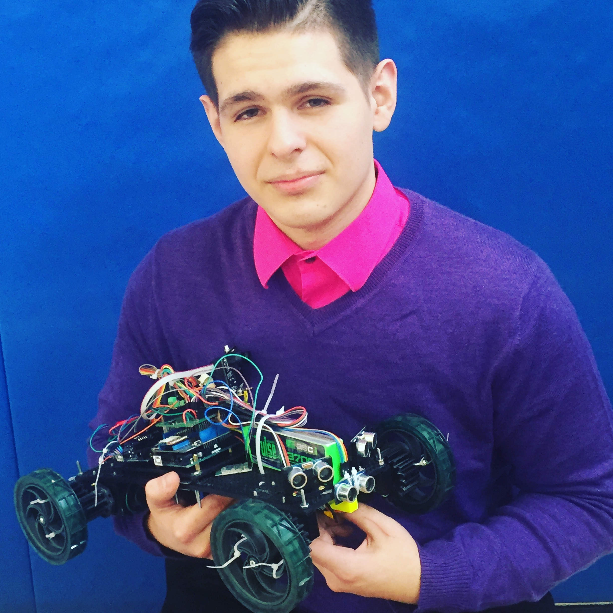

Hello.
My name is Luke R. Trujillo and this is my website. I (quickly) created this site as a place for people to see some of the projects I have done over my years and to get my contact information if need be.
About Me. (My projects are below this)
If you were to ask me in a perfect world what would I do for the rest of my life, I would say that I would like to own my tech company that creates assistive technology for the disabled ...but also makes video games, app, and a hundred other things too.
I love technology. From building my own computer to building software for computers to replacing phone screens to soldering circuit boards, I love it all.
But above all else is my passion to help others. I believe that who we are isn't defined by how much we know or how much we make, it is defined by how many people we help. I want to apply my skills to help those less fortune than myself. I was born in 1999 in Boston, MA and since have remained close. I am experienced with around 12 programming languages (I have lost count) and have a deep undying passion for math and science. Above all else, I love to learn whether it is useless fun facts or something more complex. I am a tinkerer, a maker, but more importantly I am a student for life (and in high school).
My Projects.
All projects are entirely my work unless specified otherwise. Many of my projects are still being worked on so these project descriptions will be updated periodically.

Interactive Navigation Aid for the Blind Active
This project started in early 2015 seeks to provide a affordable alternative to traditional Guide Dogs. With great success in its first year of development, the momentum has continued these project into its second year of development with even more success.
Last Updated: January 18th 2017
Learn more...
Careless Whisper ActiveAlpha
It is a search engine named after George Michaels "Careless Whisper" that searches for the general opinion of a topic by filtering internet for words associated with the topic a performing a sentiment analysis.
Last Updated: January 18th 2017
Learn more...
Webscrapper PHP InactiveOpen Source
A useful tool for those who are trying to decifer HTML pages on
internet through a simple and well developed API.Last Updated: January 18th 2017
See it on Github...